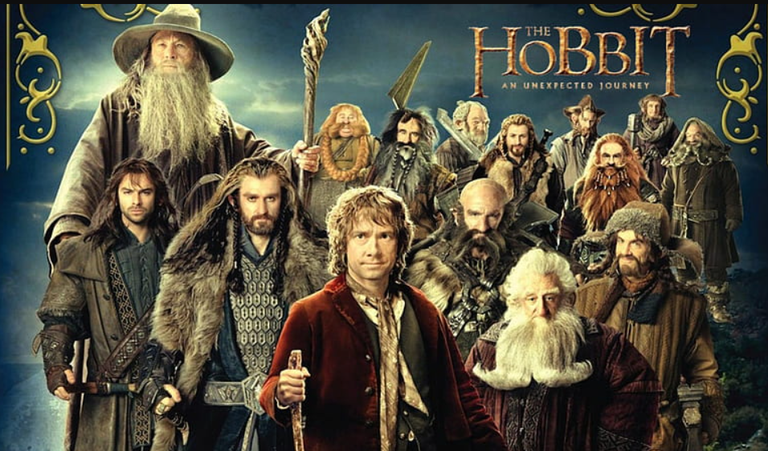

Un viaje inesperado
Bilbo Bolsón es reclutado por Gandalf y trece enanos liderados por Thorin Escudo de Roble. Juntos emprenden un viaje para recuperar Erebor, su antiguo reino bajo la Montaña Solitaria, ahora ocupado por el dragón Smaug.